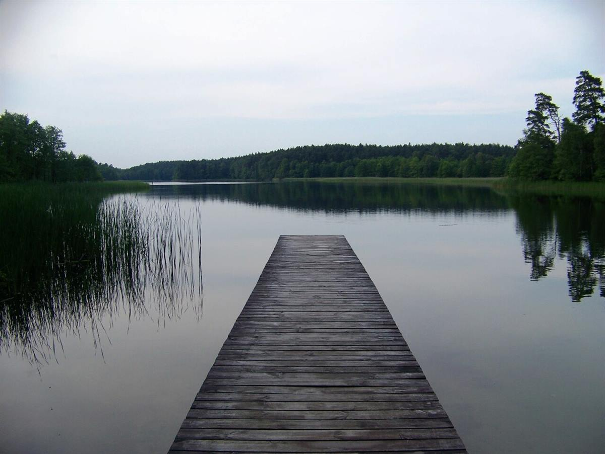
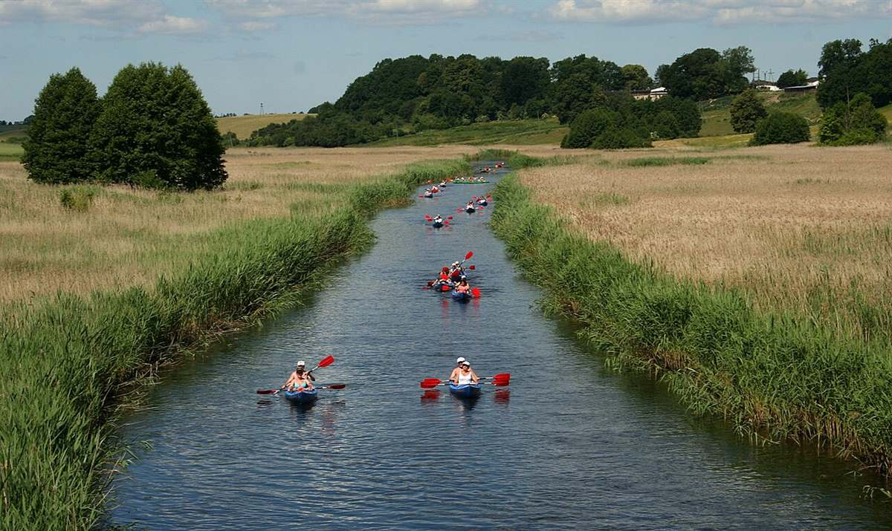
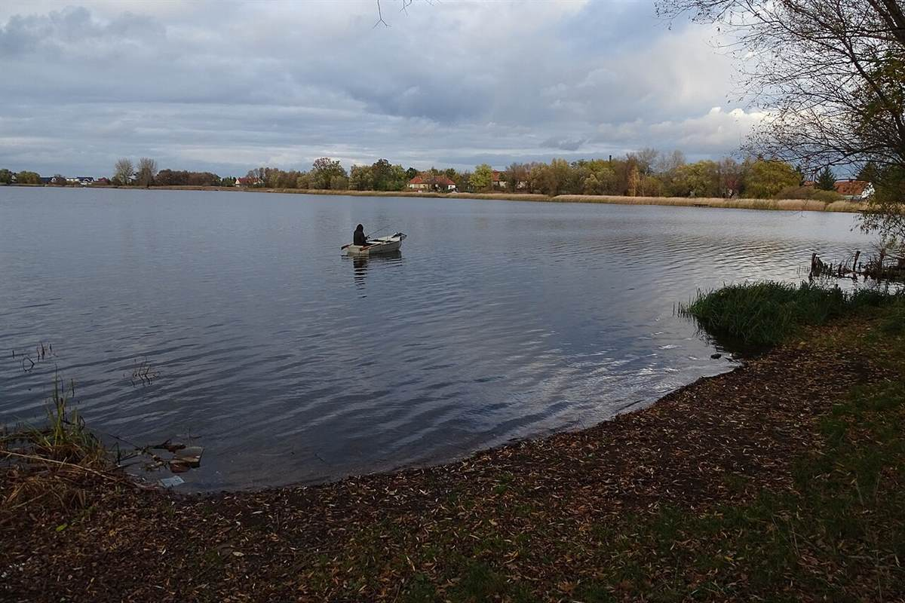
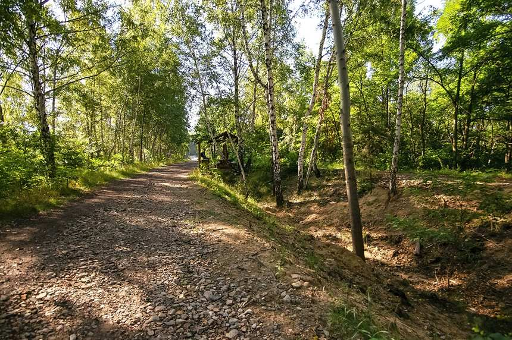

np. 2 km od domków
Jezioro z pomostem
Spokojne jezioro z drewnianym pomostem - poranna kawa nad wodą, kąpiel latem i zachody słońca wieczorem.
Woda, las i rower - atrakcje w zasięgu krótkiego spaceru albo kilkunastu minut autem. Przy każdej podajemy odległość od domków.

Przykładowe atrakcje nad wodą: kąpiel z pomostu, spływ kajakowy i wędkowanie. Na Państwa stronie wpiszemy prawdziwe jeziora i rzeki z okolicy domków.
Spokojne jezioro z drewnianym pomostem - poranna kawa nad wodą, kąpiel latem i zachody słońca wieczorem.

Kilkugodzinna trasa kajakiem po rzece wśród łąk. Wypożyczalnia przywozi kajaki na start i odbiera je na mecie.

Łowisko na jeziorze z łodzią i miejscem do wędkowania z brzegu. Zezwolenie kupisz na miejscu albo przez internet.
Las zaczyna się zaraz za domkami - tak może wyglądać ta część strony, gdy wpiszemy Państwa okolicę.

Sosnowy las z grzybami od sierpnia do października. Koszyk i nóż dostaniesz u gospodarza.

Leśne drogi i ścieżki rowerowe na kilkanaście kilometrów. Gospodarz podpowie, którą trasę wybrać z dziećmi.
Najbliższe miasteczko z marketem, apteką i restauracjami. Na prawdziwej stronie podamy nazwy miejsc i dokładne odległości liczone od domków.
Tu wstawimy mapę Google z pinezką domków i opis dojazdu autem.
Zdjęcia: Wikimedia Commons, licencje Creative Commons - autor i licencja przy każdym zdjęciu. Odległości przykładowe.